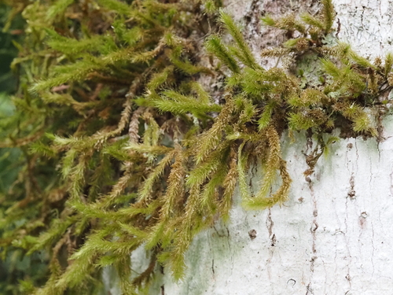

Prionodontaceae
Prionodon Moss Family
Prionodontaceae is a distinctive, monotypic family of robust pleurocarpous mosses containing only the genus Prionodon. These mosses typically form conspicuous tufts, dendroid (tree-like) structures, or pendent strands, often growing as epiphytes or epiliths in humid tropical montane forests. They are readily identified by their often regularly pinnate branching, strongly folded (plicate) leaves, and characteristically sharply toothed leaf margins.
Overview
The Prionodontaceae family, with its single genus Prionodon comprising about 10-15 species, holds a somewhat debated phylogenetic position, often placed in its own order Prionodontales, or sometimes within Leucodontales or Hypnales. These mosses are characteristic inhabitants of cloud forests and other high-elevation tropical environments across the Neotropics, Africa, Southeast Asia, and Australasia.
Prionodon species are typically large and eye-catching. Their growth form often involves creeping primary stems giving rise to erect, arching, or pendent secondary stems that are frequently regularly and densely pinnately or bipinnately branched, sometimes resembling small ferns or trees. The leaves are crowded, strongly folded lengthwise (plicate), and feature strikingly serrated margins, often with sharp, sometimes double teeth. Sporophytes are known to be produced rarely in this family.
Ecologically, Prionodontaceae are significant components of the epiphytic and epilithic bryophyte communities in tropical montane ecosystems, contributing to biomass and habitat structure in these often perpetually moist environments.
Quick Facts
- Scientific Name: Prionodontaceae
- Common Name: Prionodon Moss Family
- Number of Genera: 1 (Prionodon)
- Number of Species: Approximately 10-15
- Distribution: Pantropical montane regions (Andes, Africa, SE Asia, etc.).
- Evolutionary Group: Bryophytes - Mosses - Prionodontales (or Leucodontales/Hypnales)
Key Characteristics (Moss Morphology)
Gametophyte: Growth Form and Habit
Plants are pleurocarpous, typically large and robust. Primary stems are creeping, giving rise to secondary stems that are erect, arching, or pendent, and often regularly pinnately or bipinnately branched, sometimes appearing dendroid (tree-like). Shoots are usually densely foliate.
Gametophyte: Stems
Secondary stems are often stout. A central strand is usually present. Paraphyllia are typically absent.
Gametophyte: Leaves
Leaves are crowded, typically erect-spreading to spreading, often strongly plicate (with longitudinal folds). Leaf shape is usually ovate-lanceolate to lanceolate, often tapering to an acute or acuminate apex. The most distinctive feature is the leaf margin, which is conspicuously serrate to doubly serrate, often with sharp, projecting teeth extending down the margin. The costa is single and strong, usually ending in or near the leaf apex, or shortly excurrent. Leaf cells are typically small, short (isodiametric, quadrate, or short-rectangular), thick-walled, and often papillose (with one or multiple papillae per cell).
Sporophyte: Seta, Capsule, and Peristome
Sporophytes are generally rarely produced. Sexual condition is typically dioicous. The seta is usually short to moderate in length, often stout. The capsule is typically immersed among perichaetial leaves or shortly exserted, usually erect and symmetrical, ovoid to oblong. The operculum is usually rostrate. The peristome is double, often well-developed but variable; exostome teeth are lanceolate, papillose; endostome typically has a basal membrane, keeled segments, and sometimes rudimentary cilia.
Field Identification (Mosses)
Identifying Prionodontaceae relies on recognizing its robust habit, branching pattern, leaf features, and specific habitat:
Primary Identification Features (Field/Hand Lens)
- Robust size and habit: Large pleurocarpous mosses forming tufts, dendroid shapes, or pendent strands.
- Regular branching (often): Look for pinnate or bipinnate (fern-like) branching patterns.
- Strongly Toothed Margins: Leaf edges are conspicuously serrated, often sharply so (requires hand lens).
- Plicate Leaves: Leaves appear folded or wrinkled lengthwise.
- Habitat: Epiphytic or epilithic in humid tropical montane forests (cloud forests).
- Strong Single Costa: A distinct midrib is usually visible.
Secondary Identification Features (Microscope often needed)
- Tooth Details: Examine the sharp, often double teeth on leaf margins.
- Cell Papillosity: Confirm presence and type of papillae on the short, thick-walled leaf cells.
- Costa Apex: Check if costa ends in the apex or is excurrent.
- Sporophyte Features: Immersed/shortly exserted, erect capsule (if found).
Common Confusion Points (Other Mosses)
- Thuidiaceae: Also often pinnately/bipinnately branched and have papillose cells, but typically possess abundant paraphyllia on stems/branches and have different leaf shapes and marginal teeth.
- Hypopterygiaceae (Hypopterygium): Distinctly dendroid or frondose with differentiated stem and branch leaves and often conspicuous underleaves (amphigastria). Usually has bordered leaves.
- Robust Hypnales (e.g., some Brachytheciaceae, Hylocomiaceae): Can be large and pinnately branched, but generally lack the combination of strongly plicate leaves, sharply serrate margins, and papillose cells found in Prionodon.
- Spiridentaceae: Robust, often epiphytic mosses with strong costae and toothed leaves, but belong to a different lineage and have different peristome structures.
Field Guide Quick Reference (Mosses)
Look For:
- Robust pleurocarpous mosses
- Pinnate or dendroid branching
- Habitat in tropical mountains (epiphytic/epilithic)
- Strongly plicate (folded) leaves
- Sharply serrate leaf margins (use lens)
- Strong single costa
Key Variations:
- Growth habit (tufted vs. dendroid vs. pendent)
- Degree of branching (pinnate vs. bipinnate)
- Leaf shape details
- Presence/absence of rare sporophytes
Notable Genera
This family contains only the genus Prionodon:

Prionodon
Prionodon Moss (Genus)
The sole genus of the family. Defined by its robust, pleurocarpous habit, often regular pinnate or dendroid branching, strongly plicate leaves with sharply serrate margins, strong single costa, and typically papillose cells. Sporophytes are rare, with immersed to shortly exserted capsules. Found in tropical montane regions worldwide.
Phylogeny and Classification
Prionodontaceae holds a unique and somewhat debated position within the Bryopsida. It is often placed in its own order, Prionodontales, reflecting its distinct combination of features that do not fit neatly into other major pleurocarpous orders like Hypnales or Leucodontales (where it was sometimes traditionally placed). Molecular data generally supports its status as a distinct lineage, though its exact sister relationships remain somewhat unclear.
The family likely represents an independent evolutionary trajectory specializing in humid, high-elevation tropical environments. Key evolutionary features include the development of a robust, often highly organized (pinnate/dendroid) pleurocarpous structure, strongly plicate leaves, and the characteristic sharply toothed leaf margins. The rarity of sporophytes suggests that vegetative propagation might be important for its persistence and spread.
Position in Plant Phylogeny
- Kingdom: Plantae
- Division: Bryophyta (Mosses)
- Class: Bryopsida
- Order: Prionodontales (or Leucodontales / Hypnales)
- Family: Prionodontaceae
Evolutionary Significance
The Prionodontaceae family is significant for:
- Tropical Montane Specialization: Represents a distinct lineage adapted to high-elevation, humid tropical ecosystems (cloud forests).
- Unique Morphological Combination: Shows a unique blend of robust pleurocarpous growth, organized branching, and highly specialized leaf features (plication, serration).
- Phylogenetic Enigma: Its uncertain position highlights the complexity of pleurocarpous moss evolution and the need for further research.
- Biogeography: Exhibits a classic pantropical montane distribution pattern.